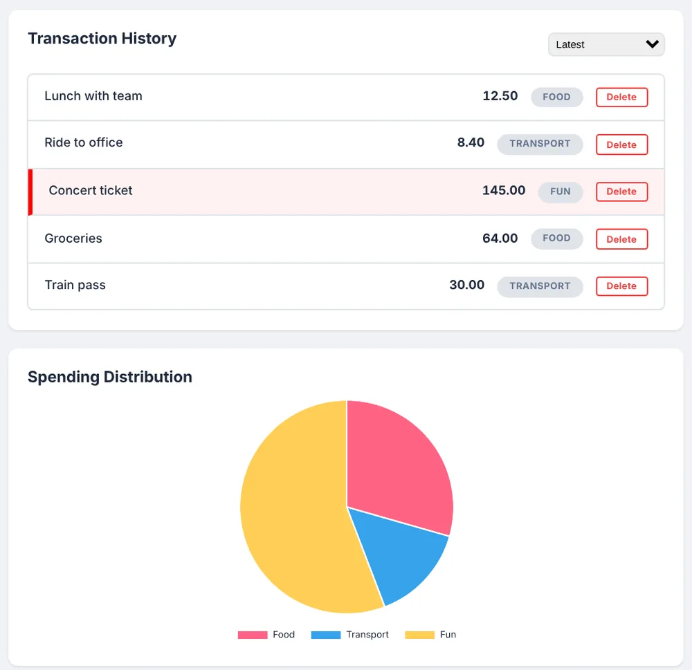

RevoU · 5-day bootcamp
Expense & Budget Visualizer
Tracks daily spending and shows it as a pie chart by category. Data stays in local storage, and it has sorting, dark mode and a highlight for large expenses. Built in five days with no framework.